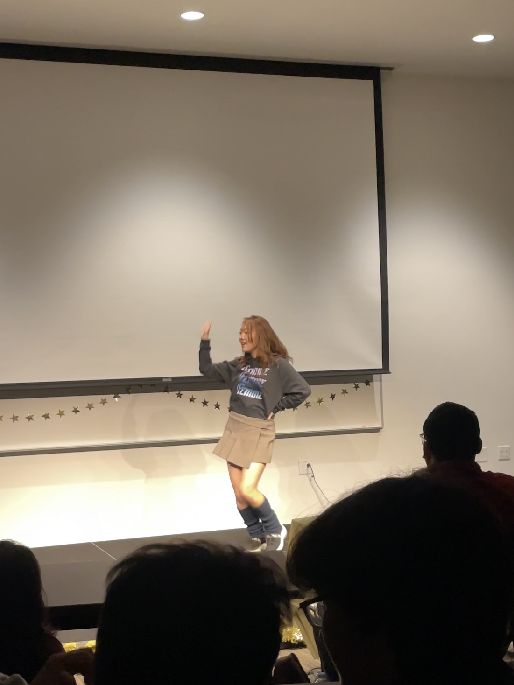
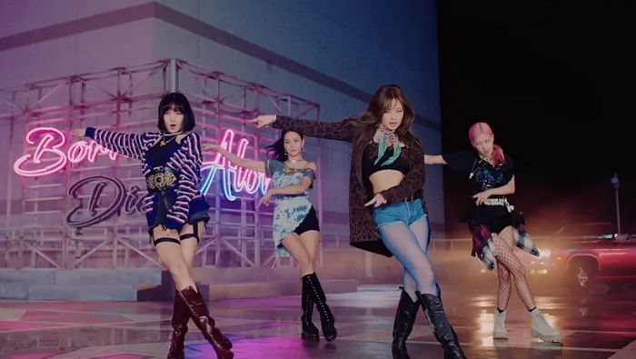

Background
Growing up in Korea, I have listened to hundreds of K-pop songs throughout my whole life, contantly being exposed to Korean music on the streets, TV shows, and from my friends at school. K-pop thus naturally integrated into my life, and I became more interested in following the dance moves of K-pop idols to imitate them. The first time I learned the dance for a K-pop song was when I was five; My mom took me to a one-day class offered at a dance academy near our house. I still remember standing in front of the mirror in a dance studio with a group of adults, copying the moves of our instructor dancing to "Honey" by KARA. Ever since then, I have fallen in great love with dancing to K-pop songs. Throughout middle, high school, and college, I have also performed my dances several times, either indivudally or with my friends.
Although I haven't professionally learned how to dance K-pop, my continuous self-learning has allowed me to substantially improve my dance skills. Back in elementary and middle school, my dances were clumsy as my arm and leg gestures were imprecise. When I compare the dance videos I took then and now, I am surprised at how professional I have become at dancing. Having gone through this stage of development and success, I find K-pop dancing inseparable from my identity. It is something I will continue practicing in the future, hopefully for the rest of my life.
How I Learn Dances

After choosing a K-pop song to cover, I initially search its dance tutorials on YouTube. Learning dances from tutorials is more effective than learning them from performance videos because I can know the exact movements I am supposed to follow. I usually watch Kathleen Carm's YouTube channel to learn dances; her explanations are very detailed, making it easy for me to follow her moves. The chorus part of dances are only around 10 minutes long, it takes more time -- approximately 30 minutes -- for me to actually memorize the sequence of the dance.
Once I have become used to the dance, I then move on to check the accuracy of my movements. I record a video of myself dancing using my phone while playing the music on another device. After that, I compare my dance with other performance videos for the same song to check if there are any differences in my arm or leg positions. After repeating this process several times, I am able to perfect my dance.
Song Preferences
I mostly enjoy dancing to girl group songs because their dances are generally easier to learn than boy group dances. Girl group dances are also softer and less powerful than boy group dances, which is a style that I prefer. I usually learn dances to songs I enjoy listening to at the moment. These typically range from songs that were recently released to those that came out more than 10 years ago.
Some of my most favorite dance covers come from Blackpink, SNSD, and KARA. I have recently been learning the dance to "Lovesick Girls," one of my top Blackpink songs. I have also learned dances to "As If It's Your Last," "How You Like That," "Pink Venom," and more. SNSD and KARA are both groups that debuted more than 10 years ago, when I was in kindergarten. However, I still enjoy listing to their music, which have a bright, cheerful mood of which I cannot feel from modern K-pop songs.